Thuật toán Blossom
Thuật toán của Jack Edmonds (1965) để ghép cặp trên đồ thị tổng quát, kể cả khi có chu trình lẻ.
- Bài toán: chọn các cặp không chung đỉnh sao cho được nhiều cặp nhất (hoặc tổng điểm lớn nhất).
- Đồ thị hai phía thì dễ. Đồ thị tổng quát có chu trình lẻ, nên Edmonds gói nó lại thành một bông hoa.
- Trong Whybi: đỉnh là SV, cạnh có điểm w; gọi sẵn
nx.max_weight_matching.
01Giới thiệu
Ghép cặp cực đại (maximum matching): trong đồ thị không hướng, chọn tập cạnh lớn nhất mà không hai cạnh nào chung đỉnh. Đồ thị hai phía có thể giải bằng đường tăng; đồ thị tổng quát thì chu trình lẻ làm thuật toán đó bị lừa.
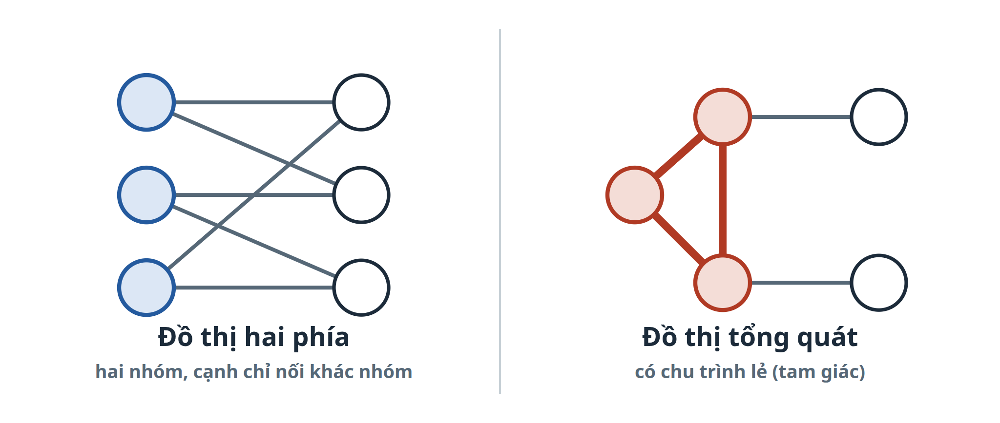
Edmonds gọi chu trình lẻ có các cạnh xen kẽ (chưa chọn, đã chọn, chưa chọn…) là bông hoa, và đường xen kẽ nối từ một đỉnh tự do tới nó là cuống hoa.
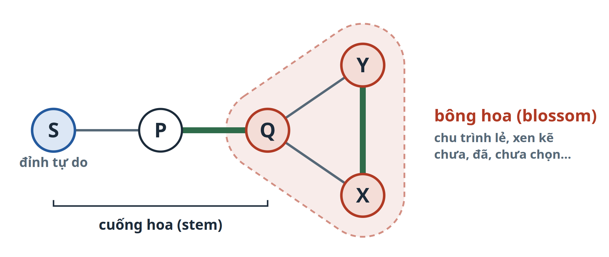
| Phiên bản | Độ phức tạp |
|---|---|
| Edmonds (1965), nguyên bản | O(V²E), cài đặt thường dùng O(V³) |
| Micali – Vazirani (không trọng số) | O(E·√V) |
Whybi: nx.max_weight_matching | O(V³); lớp 100 SV dưới 2 giây |
Ngoài đời: IBM Quantum dùng Blossom để ghép cặp các điểm lỗi khi sửa lỗi lượng tử (mã Toric); IBM Research dùng biến thể cho bài toán người đưa thư.
02Công thức
Mỗi cạnh e có một biến xe ∈ {0, 1}: bằng 1 nếu cạnh được chọn. Bài toán ghép cặp thành bài toán quy hoạch tuyến tính nguyên:
Vì sao cần dòng thứ ba? Chỉ với ràng buộc bậc, tam giác cho phép xe = ½ trên cả ba cạnh: nghiệm phân số, tổng 1,5 cạnh. Ràng buộc bông hoa chặn điều đó và là lý do thuật toán phải co chu trình lẻ lại thành một đỉnh.
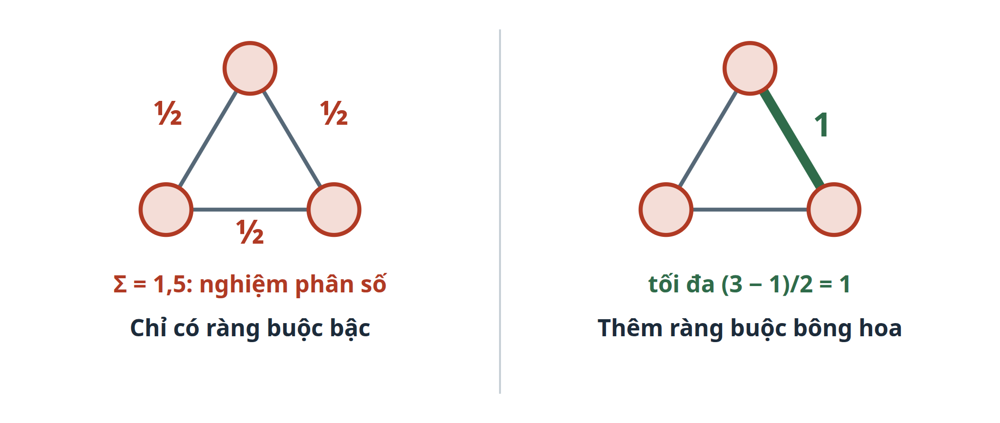
03Cách thuật toán đi
Từ một đỉnh tự do r, dựng cây tìm kiếm và gán nhãn. Bốn luật:
- Gốc r là đỉnh tự do: nhãn Chẵn.
- Đi theo cạnh chưa chọn: sang đỉnh nhãn Lẻ.
- Từ đỉnh Lẻ, đi theo cạnh đã chọn: sang đỉnh nhãn Chẵn.
- Cạnh nối hai đỉnh Chẵn cùng cây: gặp bông hoa. Co nó thành một đỉnh Chẵn rồi tìm tiếp.
Mã giả (bản rút gọn, tìm từ từng gốc một). Các bước ở hai ví dụ bên dưới ghi rõ chạy tới dòng nào.
1 Blossom(G): 2 M ← ∅ 3 với mỗi đỉnh tự do r: 4 P ← TÌM_ĐƯỜNG_TĂNG(G, M, r) 5 nếu P ≠ ∅: 6 M ← M ⊕ P ▷ đảo cạnh dọc đường tăng 7 trả M 8 TÌM_ĐƯỜNG_TĂNG(G, M, r): 9 nhãn[·] ← chưa; cha[·] ← ∅ 10 nhãn[r] ← chẵn; hàng đợi ← [r] 11 khi hàng đợi chưa rỗng: 12 v ← lấy ra ▷ v luôn mang nhãn chẵn 13 với mỗi cạnh (v, u) ∉ M: 14 nếu u tự do: trả đường r ⇝ v – u ▷ mở các hoa trên đường 15 nếu nhãn[u] = chưa: 16 nhãn[u] ← lẻ; cha[u] ← v 17 w ← mate(u); nhãn[w] ← chẵn; cha[w] ← u; đưa w vào hàng đợi 18 nếu nhãn[u] = chẵn: ▷ hai đỉnh chẵn nối nhau 19 b ← tổ tiên chung gần nhất của v và u 20 co hoa B quanh b; nhãn[B] ← chẵn; đưa B vào hàng đợi 21 trả ∅
| Ký hiệu | Nghĩa |
|---|---|
nhãn[v] | chưa / chẵn / lẻ. Chẵn: tới v bằng một cạnh đã chọn (hoặc v là gốc). Lẻ: tới v bằng cạnh chưa chọn. |
cha[v] | đỉnh đứng ngay trước v trên cây tìm kiếm; dùng để lần ngược đường |
mate(u) | bạn ghép của u trong M |
M ⊕ P | (M \ P) ∪ (P \ M): bỏ cạnh đã chọn trên P, chọn cạnh chưa chọn trên P |
| tổ tiên chung gần nhất | đỉnh chung đầu tiên khi lần ngược cha[] từ hai đỉnh chẵn; đó là cơ sở của hoa |
04Ví dụ 1: ghép hoàn hảo, không có hoa
Chuỗi C – A – B – D. M = {A–B}; C và D tự do. Chạy từ gốc C, mỗi bước một dòng.
- đã chọn (∈ M)
- chưa chọn (∉ M)
- đường đang xét
- chẵn
- lẻ
- chưa nhãn
- đã xong
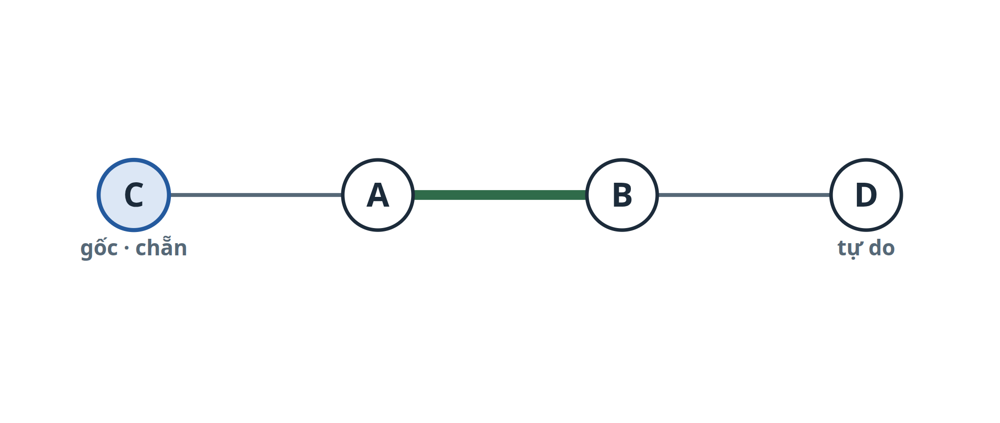
M = {A–B}, |M| = 1- đỉnh tự do: C, D ⇒ chọn gốc r = C, nhãn[C] = chẵn, hàng đợi = [C]
- Nhãn
- C=chẵn
- Cha
- –
- Hàng đợi
- [C]
- x (CA, AB, BD)
- (0, 1, 0)
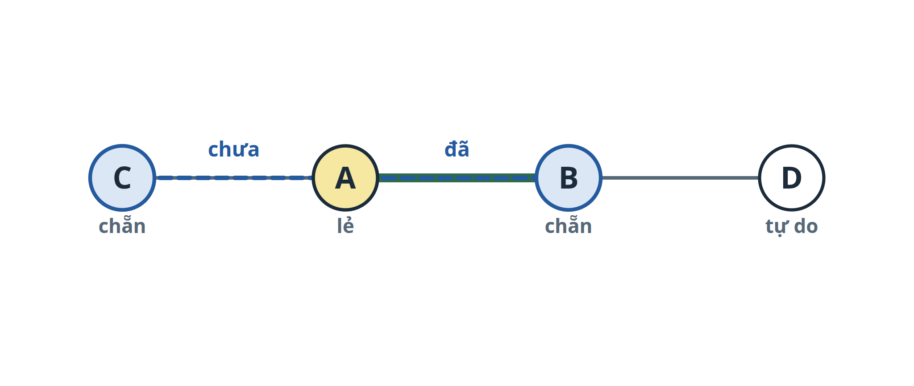
- lấy C khỏi hàng đợi; cạnh C–A ∉ M, nhãn[A] = chưa ⇒ nhãn[A] = lẻ, cha[A] = C
- mate(A) = B ⇒ nhãn[B] = chẵn, cha[B] = A, hàng đợi ← B
- Nhãn
- C=chẵn, A=lẻ, B=chẵn
- Cha
- A←C, B←A
- Hàng đợi
- [B]
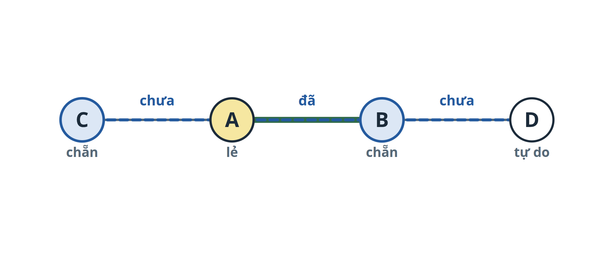
- lấy B; cạnh B–A ∈ M là cạnh cây, bỏ qua
- B–D ∉ M và D tự do ⇒ có đường tăng P = C–A–B–D: ∉, ∈, ∉ (xen kẽ), độ dài 3
- không có cạnh nào nối hai đỉnh chẵn (đồ thị là một đường, không có chu trình) ⇒ không cần co hoa
- Đường P
- {C–A, A–B, B–D}
- P ∩ M
- {A–B}
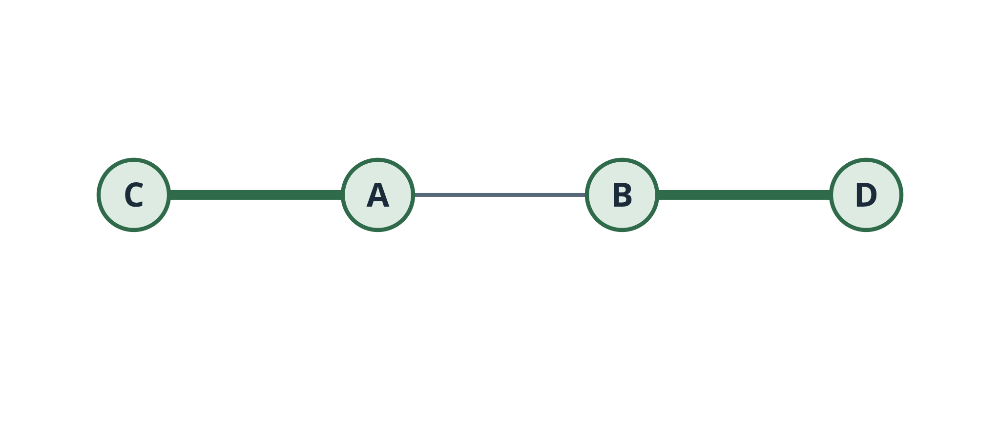
M ⊕ P = (M \ P) ∪ (P \ M)- M \ P = {A–B} (cạnh đã chọn trên P bị bỏ)
- P \ M = {C–A, B–D} (cạnh chưa chọn trên P được chọn)
- M′ = {C–A, B–D}, |M′| = 2 = |M| + 1 (đường tăng luôn có ∉M nhiều hơn ∈M đúng một cạnh)
- x mới (CA, AB, BD)
- (1, 0, 1)
- Đỉnh tự do
- không còn
- Mục tiêu Σ xe = 2. Không còn đỉnh tự do ⇒ không còn đường tăng ⇒ M cực đại, và hoàn hảo.
| Ràng buộc | Tính | |
|---|---|---|
| Bậc từng đỉnh | C: 1, A: 1, B: 1, D: 1 | ≤ 1 ✓ |
| Hoa S = {A, B, C} | xCA + xAB = 1 + 0 = 1 | ≤ (3−1)/2 = 1 ✓ |
| Hoa S = {B, C, D} | xBD = 1 | ≤ 1 ✓ |
05Ví dụ 2: gặp bông hoa
6 bạn S, P, Q, X, Y, T; Q, X, Y là tam giác. M = {P–Q, X–Y}; S và T tự do. Chạy từ gốc S. Bước 3 là chỗ thuật toán Blossom khác với tìm đường tăng thường.
- đã chọn (∈ M)
- chưa chọn (∉ M)
- đường đang xét
- chẵn
- lẻ
- chưa nhãn
- đã xong
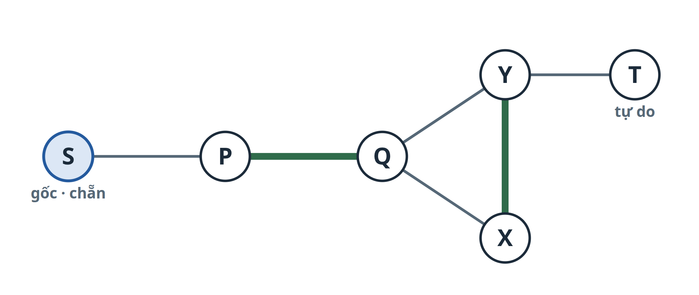
M = {P–Q, X–Y}, |M| = 2- đỉnh tự do: S, T ⇒ chọn gốc r = S, nhãn[S] = chẵn, hàng đợi = [S]
- Nhãn
- S=chẵn
- Cha
- –
- Hàng đợi
- [S]
- x (SP, PQ, QX, XY, YQ, YT)
- (0, 1, 0, 1, 0, 0)
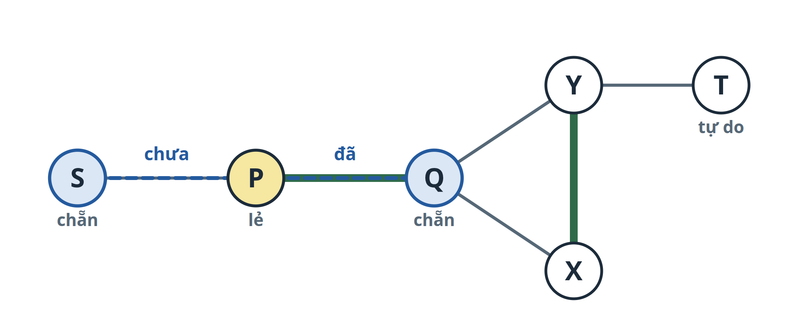
- lấy S khỏi hàng đợi; cạnh S–P ∉ M, nhãn[P] = chưa ⇒ nhãn[P] = lẻ, cha[P] = S
- mate(P) = Q ⇒ nhãn[Q] = chẵn, cha[Q] = P, hàng đợi ← Q
- Nhãn
- S=chẵn, P=lẻ, Q=chẵn
- Cha
- P←S, Q←P
- Hàng đợi
- [Q]
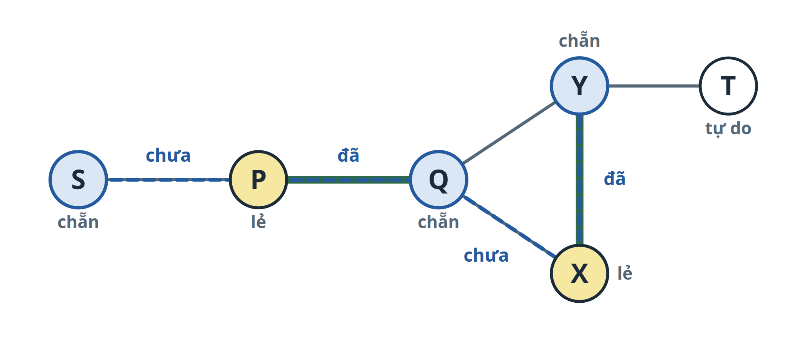
- lấy Q; cạnh Q–P ∈ M là cạnh cây, bỏ qua
- Q–X ∉ M, nhãn[X] = chưa ⇒ nhãn[X] = lẻ, cha[X] = Q
- mate(X) = Y ⇒ nhãn[Y] = chẵn, cha[Y] = X, hàng đợi ← Y
- Nhãn
- S=chẵn, P=lẻ, Q=chẵn, X=lẻ, Y=chẵn
- Cha
- P←S, Q←P, X←Q, Y←X
- Hàng đợi
- [Y]
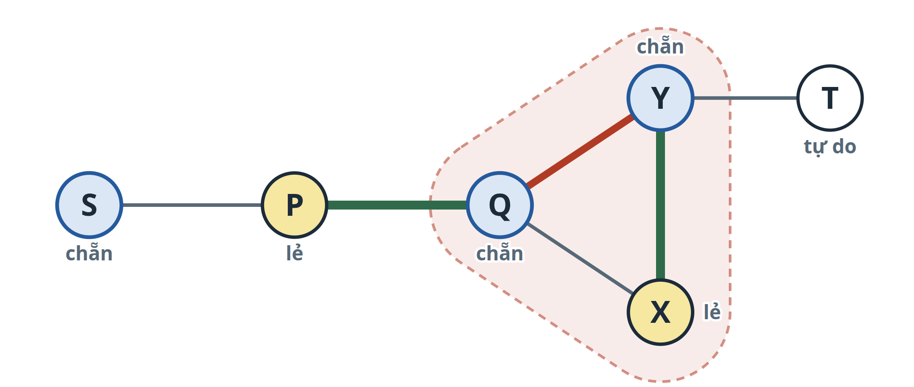
- Q–Y ∉ M, nhãn[Y] = chẵn và Y cùng cây với Q ⇒ hai đỉnh chẵn nối nhau: có chu trình lẻ
- lần ngược cha[]: tổ tiên của Q là Q → P → S; tổ tiên của Y là Y → X → Q
- tổ tiên chung gần nhất: b = Q (cơ sở của hoa)
- hoa B = {Q, X, Y}: đường Y → X → Q cộng cạnh Y–Q, |B| = 3 (lẻ)
- Hoa
- B = {Q, X, Y}, cơ sở Q
- Cạnh đỏ
- Y–Q (chẵn – chẵn)
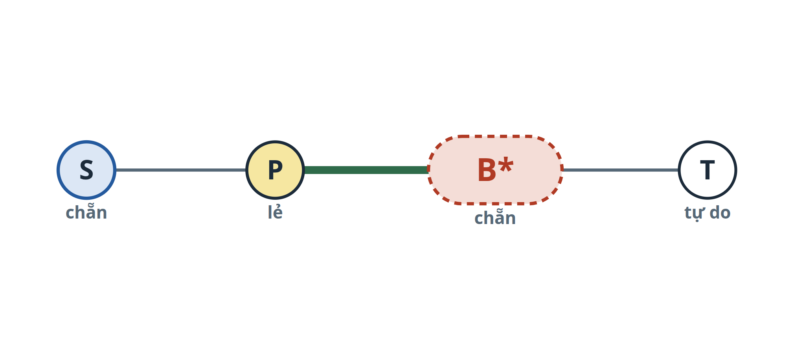
- gộp Q, X, Y thành một đỉnh B*; bỏ các cạnh bên trong (Q–X, X–Y, Y–Q)
- cạnh ra ngoài được giữ: P–Q thành P–B*, Y–T thành B*–T
- M′ = M \ (cạnh trong B) = {P–B*}
- nhãn[B*] = nhãn[cơ sở Q] = chẵn, cha[B*] = cha[Q] = P, hàng đợi ← B*
- Đỉnh G/B
- {S, P, B*, T}
- Cạnh G/B
- S–P, P–B*, B*–T
- Nhãn
- S=chẵn, P=lẻ, B*=chẵn
- Hàng đợi
- [B*]
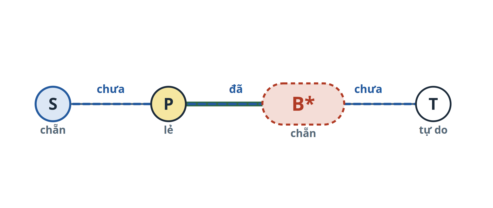
- lấy B*; cạnh B*–T ∉ M′ và T tự do ⇒ tìm được đường tăng trên G/B
- P′ = S → P → B* → T: S–P ∉ M′, P–B* ∈ M′, B*–T ∉ M′ ⇒ xen kẽ
- hai đầu S, T đều tự do, độ dài 3 (lẻ)
- Đường P′
- S–P, P–B*, B*–T
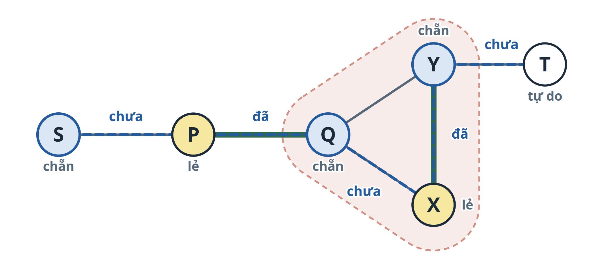
- P′ vào hoa tại cơ sở Q (qua cạnh đã ghép P–Q) và ra tại Y (qua Y–T ∉ M)
- cần đường xen kẽ Q ⇝ Y bắt đầu bằng ∉ M và kết thúc bằng ∈ M, để nối tiếp Y–T ∉ M
- đường thật P = S–P, P–Q, Q–X, X–Y, Y–T: ∉, ∈, ∉, ∈, ∉
- Đường P
- 5 cạnh: 3 ∉ M, 2 ∈ M
| Lối đi | Cạnh | Xen kẽ? |
|---|---|---|
| Q–Y | ∉ M | ✗ rồi lại Y–T ∉ M: hai cạnh ∉ M liền nhau |
| Q–X–Y | ∉ M, ∈ M | ✓ |
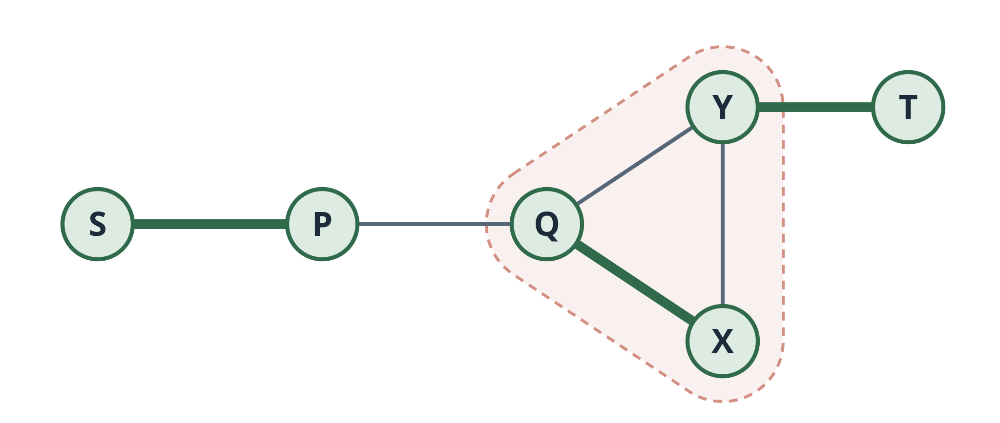
M ⊕ P = (M \ P) ∪ (P \ M)- M \ P = ∅ (cả P–Q và X–Y đều nằm trên P)
- P \ M = {S–P, Q–X, Y–T}
- M′ = {S–P, Q–X, Y–T}, |M′| = 3 = |M| + 1
- x mới (SP, PQ, QX, XY, YQ, YT)
- (1, 0, 1, 0, 0, 1)
- Đỉnh tự do
- không còn
- Mục tiêu Σ xe = 3. Không còn đỉnh tự do ⇒ không còn đường tăng ⇒ M cực đại, và hoàn hảo.
| Ràng buộc | Tính | |
|---|---|---|
| Bậc từng đỉnh | S: 1, P: 1, Q: 1, X: 1, Y: 1, T: 1 | ≤ 1 ✓ |
| Hoa S = {Q, X, Y} | xQX + xXY + xYQ = 1 + 0 + 0 = 1 | ≤ (3−1)/2 = 1 ✓ |
| Hoa S = {S, P, Q, X, Y} | xSP + xPQ + xQX + xXY + xYQ = 1 + 0 + 1 + 0 + 0 = 2 | ≤ (5−1)/2 = 2 ✓ |
06Trong Whybi
| Phần | Ở project |
|---|---|
| Trọng số we | Điểm bù trừ hai chiều của cặp (xem 2.2.6, tính điểm w) |
| Gọi thuật toán | nx.max_weight_matching(g, maxcardinality=False) (algorithms/matching.py:88): cần tổng w lớn nhất, không ép nhiều cặp nhất |
| Vì sao O(V³) | Mỗi đỉnh làm gốc tối đa một lần (V lần). Mỗi lần tìm: mỗi đỉnh vào hàng đợi tối đa một lần, và co hoa tối đa V lần với chi phí O(V) mỗi lần, nên O(V²). Tổng O(V³) (cài đặt đơn giản) |
| Bản có trọng số | Giữ thêm biến đối ngẫu cho đỉnh và cho hoa; chỉ đi trên cạnh "chặt" (độ lệch bằng 0). Hết cạnh chặt thì chỉnh biến đối ngẫu rồi tìm tiếp. Các ví dụ trên là bản không trọng số để thấy rõ gói / mở hoa |
| Đã kiểm | 600 lớp ngẫu nhiên (2 đến 9 SV): tổng w luôn bằng đáp án vét cạn |
Dễ bị hỏi
Blossom khác tham lam ở đâu?
Tham lam chọn cạnh nặng nhất trước và không sửa lại. Blossom ghép tạm rồi sửa bằng đường tăng, nên đạt tổng lớn nhất cho cả lớp (xem 2.2.6).
Vì sao chỉ chu trình lẻ mới gây rắc rối?
Ở chu trình chẵn, hai lối tới cùng một người luôn dài ngắn cùng tính chẵn lẻ, nên vẫn xen kẽ được. Ở chu trình lẻ hai lối lệch nhau một bước, người đó bị gán hai vai.
Ghép hoàn hảo lúc nào cũng có không?
Không. Cần số đỉnh chẵn và đồ thị đủ cạnh. Lớp có số SV lẻ hoặc có bạn không bù trừ được ai thì có người chưa có cặp; Whybi xử lý bằng ghép một chiều hoặc hàng chờ.
Phần giới thiệu và công thức tóm tắt từ tài liệu IBM về thuật toán Blossom (đa diện ghép cặp của Edmonds). Hai ví dụ là của đề tài. Trang kế: 2.2.6, chọn cặp cho cả lớp.